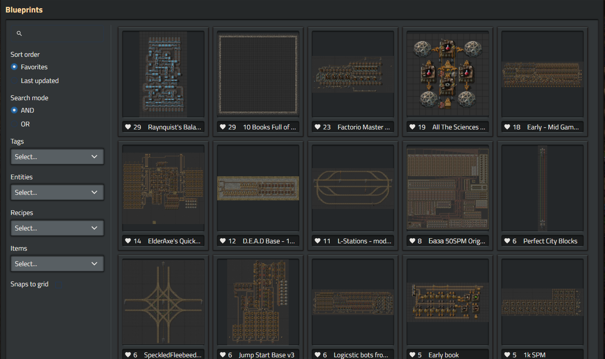

The API or data source your app uses
I plan to use my own data to start and eventually build the ability for users to submit their own data and ill maintain a database for it on my own server. The data will consist of blueprints from the game 'Factorio', likely in their exported string or json forms that will be parsed and displayed by the app.
The major features of the app
- User submitted content
- Parsing and rendering various stats and previews of the blueprints
- Search of the database by title, stats, tags, ect.
- users to easily copy the exported version of the blueprints
Planned interface
The look will be heavily based on factorio's in game interface. Ui will likely be something like this:
